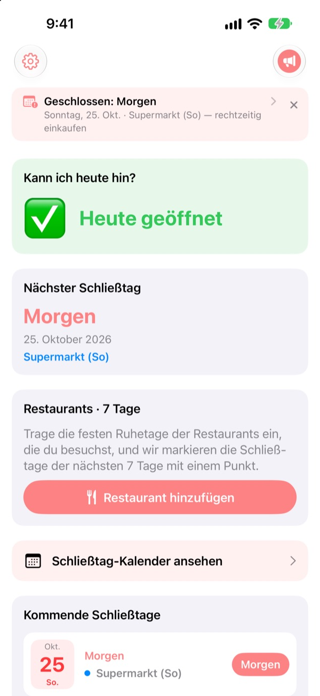
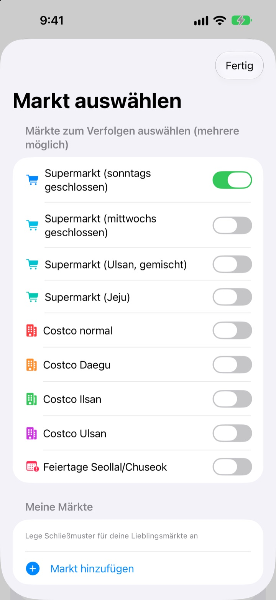
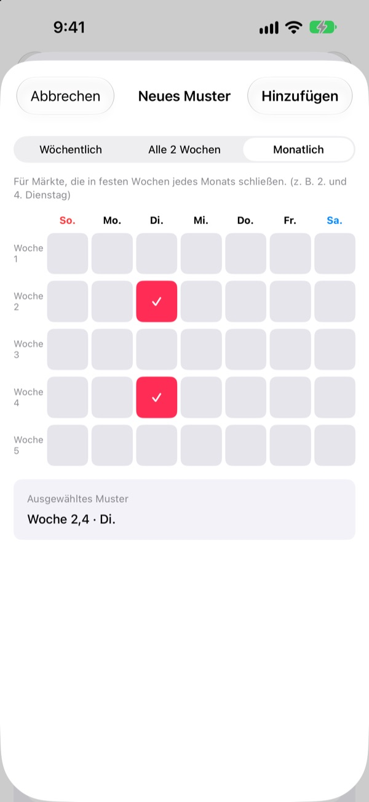
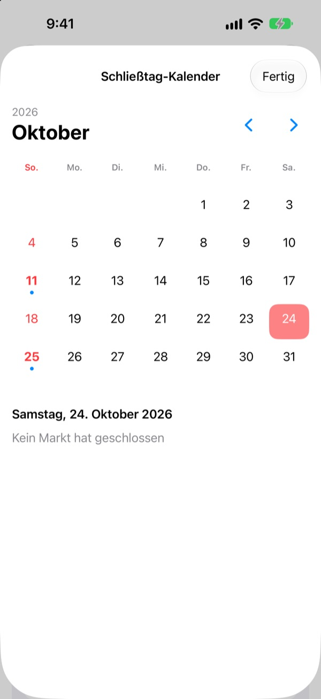
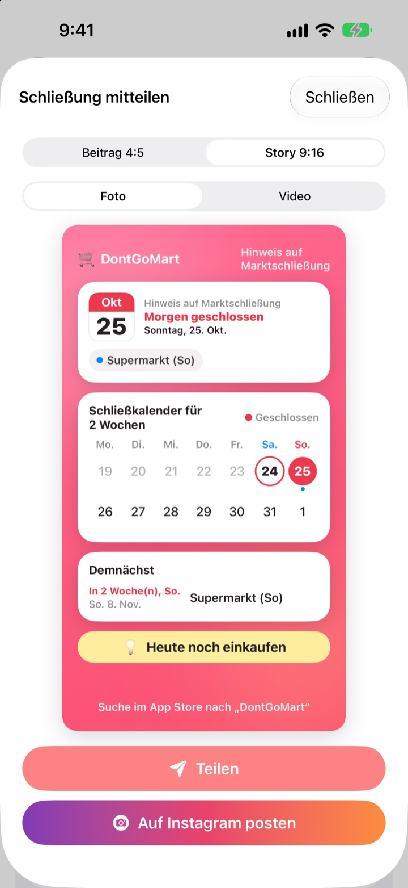

Bevor du einkaufen gehst:
Hat der Laden heute offen?
Beim Öffnen der App siehst du als Erstes, ob deine Märkte heute geöffnet sind. Vor jedem Schließtag kommt eine Erinnerung, damit du nie wieder vor verschlossenen Türen stehst.
Alle Funktionen sind kostenlos. Ohne Konto, ohne Werbung.

Probier es mit deinem Markt
Wähl einen Markt und sieh sofort, ob er heute offen hat und wann der nächste Schließtag ist. Gerechnet wird nach denselben Regeln wie in der App.
Schon mal mit Einkaufsliste vor geschlossener Tür gestanden?
Große Supermärkte in Korea müssen an zwei Tagen im Monat schließen, aber an welchen, hängt vom Ort ab. Meist sind es der zweite und vierte Sonntag, anderswo Mittwoch, und Ulsan und Jeju haben eigene Regeln. Bei Costco kommt es auf die Filiale an. DontGoMart berechnet die Schließtage nach den Regeln deiner Märkte und sagt dir zuerst, ob du heute hingehen kannst.
Stimmt für jede Region
Wähl Märkte, die sonntags oder mittwochs schließen, oder Regionen mit eigenem Rhythmus wie Ulsan und Jeju. Die normalen Costco-Filialen und die in Daegu, Ilsan und Ulsan lassen sich einzeln einstellen.
Auch die Schließtage an Seollal und Chuseok werden angezeigt, und du kannst mehrere Märkte gleichzeitig verfolgen.

Dein Markt um die Ecke und deine Stammrestaurants
Fehlt ein Markt in der Liste, leg ihn selbst an: jede Woche, alle zwei Wochen oder in welchen Wochen des Monats an welchem Tag er schließt.
Für Restaurants fügst du einen aus Naver Map geteilten Link ein oder wählst einen Screenshot der Infoseite, und die Ruhetage werden automatisch eingetragen. Text auf Fotos wird nur auf deinem Gerät gelesen.

Erinnerungen und Widgets, damit nichts untergeht
Lass dich 1, 2, 3 oder 7 Tage vorher zur gewünschten Uhrzeit erinnern, und am Vortag noch einmal daran, dass heute ein guter Tag zum Einkaufen ist.
Widgets auf dem Home-Bildschirm und Sperrbildschirm zeigen den nächsten Schließtag, ob diesen Sonntag geöffnet ist und die nächsten sieben Tage deiner Restaurants. Der Kalender zeigt einen ganzen Monat.

Mit einer Karte geteilt
Mach aus der Info eine Karte mit Zwei-Wochen-Kalender und Einkaufstipp und schick sie in den Familienchat. Es gibt Formate für Instagram-Beitrag und Story sowie kurze Videos.

In drei Schritten startklar
- 1
Märkte wählen
Schalte die Märkte und Regionen ein, in denen du einkaufst. So viele du willst.
- 2
Erinnerungen einschalten
Leg fest, wie viele Tage vorher und um wie viel Uhr.
- 3
Widget hinzufügen
Auf Home- oder Sperrbildschirm nachsehen, ohne die App zu öffnen.
Schließregeln je Markt
- Supermarkt (sonntags geschlossen)
- 2. und 4. Sonntag · fast alle Regionen
- Supermarkt (mittwochs geschlossen)
- 2. und 4. Mittwoch · Teile von Gyeonggi, Cheongju
- Supermarkt (Ulsan)
- 2. Mittwoch, 4. Sonntag
- Supermarkt (Jeju)
- 2. Freitag, 4. Samstag
- Costco normal
- 2. und 4. Sonntag
- Costco Daegu
- 2. und 4. Montag · Daegu, Daegu Innovation
- Costco Ilsan
- 2. und 4. Mittwoch
- Costco Ulsan
- 2. Mittwoch, 4. Sonntag
- Seollal, Chuseok
- am Feiertag selbst geschlossen
Die Pflicht-Schließtage legen die Kommunen fest, sie können sich ändern. Stimmt etwas nicht, schreib uns an die Adresse unten.
Häufige Fragen
Die Schließtage stimmen nicht.
Pflicht-Schließtage regeln örtliche Verordnungen, sie unterscheiden sich je Region. Prüf in den Einstellungen, ob du den passenden Markttyp gewählt hast (sonntags geschlossen, mittwochs geschlossen, Ulsan, Jeju usw.). Passt es trotzdem nicht, schick uns Name und Gegend des Markts, wir prüfen das.
Mein Markt fehlt in der Liste.
Leg ihn als eigenen Markt an. Wähl jede Woche, alle zwei Wochen oder in welchen Wochen des Monats an welchem Tag er schließt, zum Beispiel am zweiten und vierten Sonntag.
Die Ruhetage eines Restaurants wurden falsch eingetragen.
Beim Import über einen Naver-Map-Link müssen die Ruhetage auf der Seite des Restaurants stehen. Beim Screenshot muss der Hinweis auf den Ruhetag im Bild zu sehen sein. Vor dem Speichern kannst du alles anpassen.
Ich bekomme keine Erinnerungen.
Prüf, ob Mitteilungen unter Einstellungen > Mitteilungen > DontGoMart erlaubt sind und die Erinnerungen in der App eingeschaltet sind.
Das Widget aktualisiert sich nicht.
Öffne die App einmal, dann werden die Widgets aktualisiert. Hilft das nicht, entferne das Widget und füg es neu hinzu.
Was ist das Trinkgeld?
Alle Funktionen von DontGoMart sind kostenlos. Kaffee, Kuchen und Essen sind Trinkgelder für den Entwickler. Danach bekommst du ein Dankeschön und ein Abzeichen mit der Zahl deiner Trinkgelder.
Wo frage ich wegen Zahlungen oder Erstattungen?
In-App-Käufe wickelt Apple ab, Erstattungen beantragst du also unter reportaproblem.apple.com. Für alles andere schreib uns.
Wie werden meine Daten behandelt?
Es gibt keine Konten, keine Werbung und keine Tracking-Tools, und Text auf Screenshots wird nur auf deinem Gerät gelesen. Details in der Datenschutzerklärung unten.
Fragen oder Ideen? Schreib an hyunho.lee.1993@gmail.com. Wir antworten meist innerhalb von ein bis zwei Tagen.